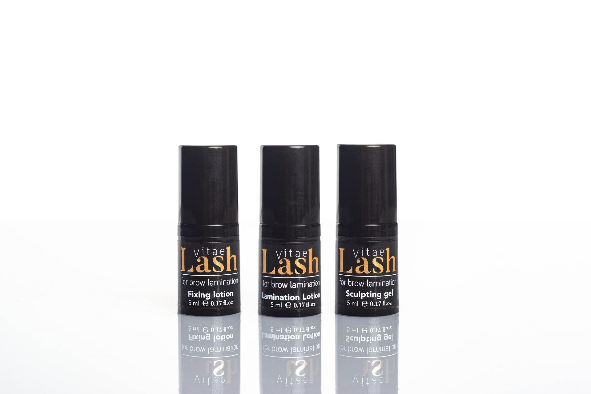
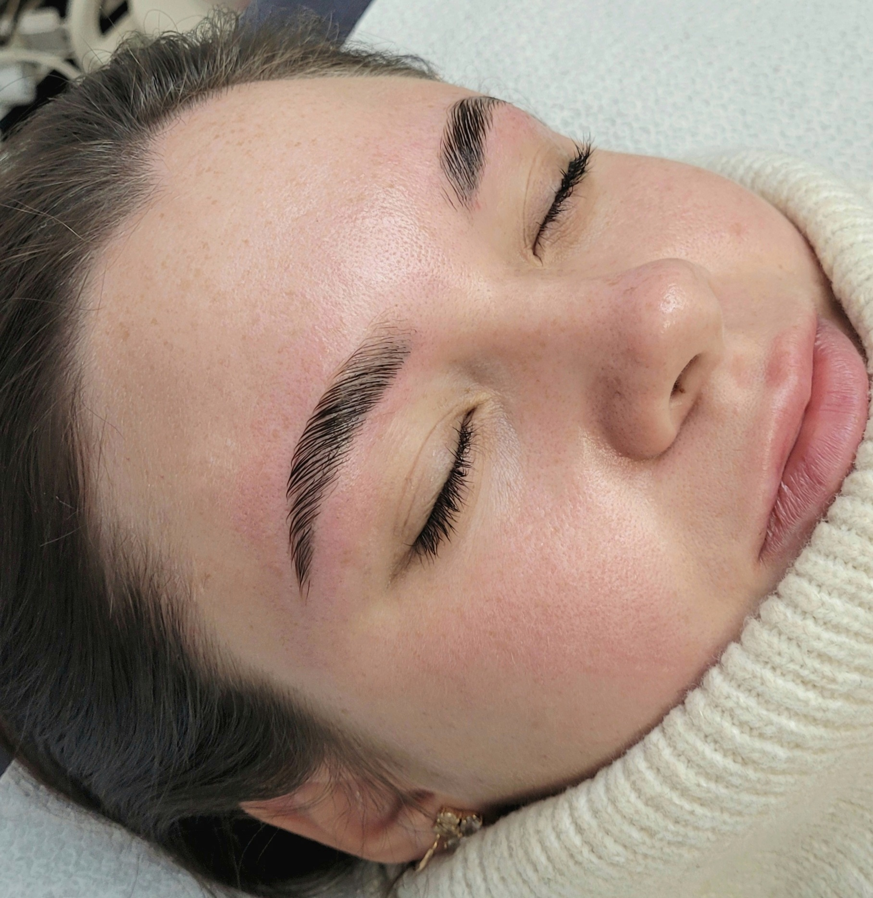

<div class="container-fluid">
  <div class="container">
    <section>
      <h3 class="text-center pb-5">Antakių Laminavimas</h3>
      <div class="row">
        <div class="col-md-6">
          <p>
            Antakių laminavimas - tai procedūra, kurios metu antakių plaukeliai
            yra ištiesinami, sudėliojami norima kryptimi,užfiksuojami,nudažomi,
            bei prisotinami vitaminais ir mikroelementais. Procedūros metu
            antakiams yra suteikiama tvarkinga išvaizda, taisyklinga forma, bei
            paryškinama antakių plaukelių spalva.
          </p>

          <p>Antakių laminavimo procedūra rekomenduojama, kai:</p>
          <ul>
            <li>Antakių plaukeliai auga skirtingomis kryptimis;</li>
            <li>Antakių plaukeliai yra nepaklusnūs;</li>
            <li>Turite netaisyklingą antakių formą;</li>
            <li>Norite apimties, tačiau turite išretėjusius antakius;</li>
            <li>Turite vešlius, garbanotus antakius.</li>
          </ul>
          <br />
          <p>
            Po antakių laminavimo procedūros plaukeliai tampa minkštesni,
            paklusnesni, antakius galite šukuoti ir kurti jums norimą formą. Ši
            procedūra paslepia vietas, kur trūksta plaukelių, to pasekoje
            suteikiamas vešlesnių antakių efektąs.
          </p>

          <p>
            Po antakių laminavimo procedūros pigmentas plaukelyje išsilaiko iki
            7-8 savaičių. Atminkite, kad išliekamumui įtakos turi veido odos
            tipas, prigimtinis plauko paslankumas ir polinkis riestis.
          </p>

          <p>
            Po antakių laminavimo procedūros antakius rekomenduojama maitinti
            įvairiais maitinančiais/drėkinančiais serumais. Tam puikiai tinka
            argano aliejus, ricinos aliejus, migdolų aliejus ir kt.
          </p>

          <p>Procedūros eiga:</p>
          <ul>
            <li>
              Antakių plaukelių ištiesinimas/ fiksavimas norima kryptimi,
              vešlesnės formos sukūrimas;
            </li>
            <li>Antakių dažymas geliniais Bronsun dažais;</li>
            <li>Antakių korekcija vašku/ pincetu;</li>
            <li>Antakių maitinimas, drėkinimas.</li>
          </ul>

          <p>Procedūra atliekama su Vitae Brow Antakių laminavimo sistema.</p>

          <p>
            VITAE BEAUTY ¬– tai aukščiausios kokybės blakstienų ir antakių
            laminavimo bei blakstienų priauginimo produktai, kurie yra sukurti,
            patikrinti bei įregistruoti Švedijoje.
          </p>

          <p class="text-size">
            <i
              >*Lash Vitae prekinis ženklas yra notifikuotas Švedijoje ir
              atitinka visus ES standartus( nėra formaldehidų, parabenų, visi
              produktai yra hipoalerginiai).</i
            >
          </p>
        </div>
        <div class="col-md-6 text-center mb-5">
          
          <hr />
          
        </div>
      </div>
    </section>
  </div>
</div>
